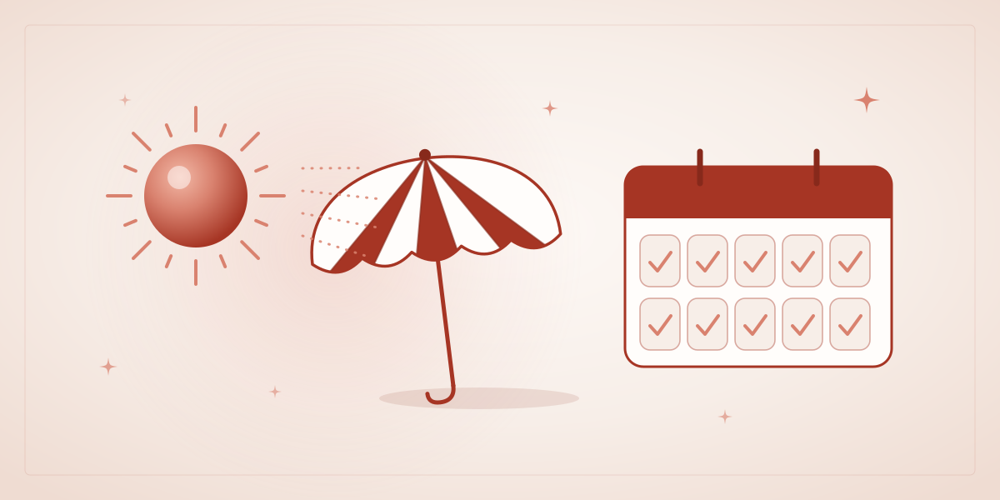
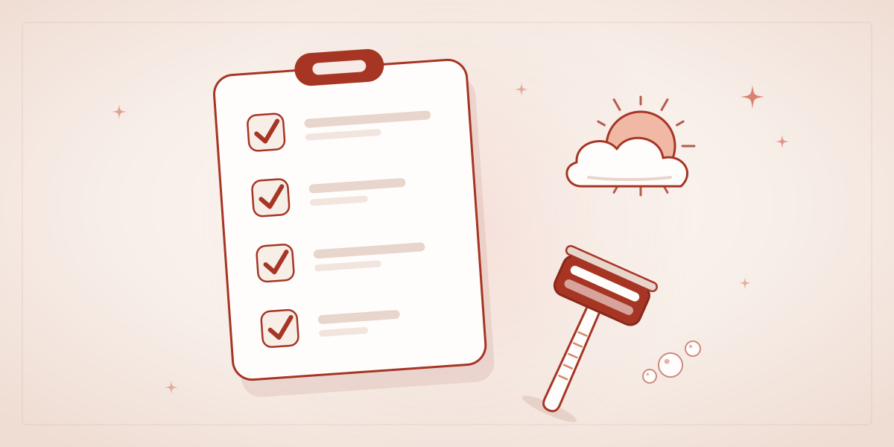
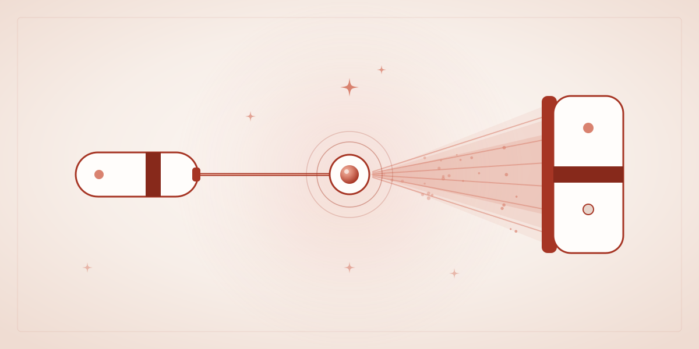

Chaque printemps, la même question revient : peut-on faire du laser quand on est bronzé ? La réponse demande un peu de nuance, car c'est surtout une affaire de sécurité pour votre peau. Voici les repères à connaître avant l'été.
Pourquoi le bronzage pose problème
Le laser cible la mélanine, le pigment qui colore le poil. Or le bronzage, c'est justement une augmentation de la mélanine dans la peau. Sur une peau bronzée, le laser risque de ne plus faire la différence entre le poil et la peau, ce qui augmente le risque de réaction (rougeurs, taches, voire brûlure superficielle).
C'est pour cette raison qu'une peau récemment exposée n'est pas traitée : on attend que le bronzage s'estompe pour travailler en sécurité.
Réserver mon bilan laser (nouvel onglet)
Combien de temps attendre ?
La règle de prudence est d'éviter le soleil, les UV et l'autobronzant pendant 10 jours avant chaque séance, et 10 jours après. L'autobronzant compte aussi, car il colore la peau et fausse le repère du laser.
Si vous avez prévu des vacances au soleil, mieux vaut anticiper et caler vos séances en dehors de ces périodes. Le bilan permet d'organiser le calendrier avec vous.
Retrouvez la méthode et les zones traitées sur notre page épilation laser à Manosque.
Comment organiser ses séances autour de l'été
L'idéal est de commencer son protocole à l'automne ou en hiver, lorsque la peau n'est pas bronzée et que l'exposition est faible. On enchaîne ainsi plusieurs séances dans de bonnes conditions, et l'on arrive à l'été avec une pilosité déjà bien réduite.
En été, on peut poursuivre à condition de protéger scrupuleusement les zones traitées et d'éviter le soleil direct. C'est pourquoi de nombreuses clientes profitent de la saison froide pour avancer le plus gros du parcours.
Pour estimer la durée totale de votre parcours, lisez aussi combien de séances d'épilation laser prévoir.
Les bons réflexes avant et après une séance
Avant la séance, on rase la zone (on n'arrache pas le poil), on ne s'expose pas et on signale tout changement de traitement ou de peau. Après la séance, on apaise la peau, on applique une protection solaire élevée sur les zones exposées et on évite la chaleur intense pendant 48 heures.
Ces précautions simples garantissent à la fois l'efficacité du traitement et la sécurité de votre peau.
Questions fréquentes
Peut-on faire du laser en été ?
Oui, à condition de ne pas être bronzé et de protéger soigneusement les zones traitées. Beaucoup préfèrent toutefois avancer leur protocole en automne et en hiver.
L'autobronzant empêche-t-il une séance ?
Oui. L'autobronzant colore la peau et fausse le repère du laser. Il faut l'éviter 10 jours avant une séance.
À lire aussi

Préparer sa première séance d'épilation laser
Bilan, rasage, soleil, médicaments : tout ce qu'il faut faire (et éviter) avant votre première séance d'épilation laser pour qu'elle se passe au mieux.

Épilation laser homme : torse, dos, barbe
L'épilation laser n'est pas réservée aux femmes. Torse, dos, épaules, nuque ou contour de barbe : ce que les hommes peuvent traiter et comment ça se passe.

Épilation laser ou lumière pulsée : quelles différences ?
Laser et lumière pulsée (IPL) reposent sur des principes proches mais ne se valent pas. On compare efficacité, précision et usage en institut pour bien choisir.